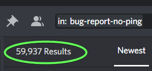

v2.5.2 Bug Fix Patch 2

While it’s impossible to fix all bugs in a game with so many interaction combinations, I’m definitely aiming to rid of the core ones. Last patch did a job of that, but there are still some repeated ones out there.
Class Bug Fixes
- Fixed Assassin’s Assassinate abil interaction with Reaper (that was causing Reaper to be unhealable) and a more-obscure bug that forgot to consider Empower.
- Analyze abil feedback class results now show properly.
- Noble’s Gossip abil now correctly displays occupies.
- Fixed the ancient bug of Reaper’s Icy Touch (Chill) abil lifting too early due to host migration (disconnection) due to unsync’d timers.
- Knight’s Defend abil is now unhealable, as intended.
- Fixed obscure bug where Knights who get successfully redirected into Hunter’s Bear Companion abil will no longer die, since CS will be cancelled out, as intended.
- Knights will now successfully Cold Steel their intended target if they are occupy immune and there was a redirection attempt on them.
- Fixed Mystic’s
%X%target name feedback that wasn’t being replaced with the actual name. - ^ Similarly fixed Hunter’s %CASTER% notification.
- Fixed an obscure Matchmake abil bug that was skewing results for Cult targets (Unseen targets worked fine).
- Fixed Alchemist’s Emerald Potion abil that was not considering protection from Merc’s Shield abil.
- Hunter’s Mark abil will now correctly occupy as intended.
- Hunter’s Mark abil no longer shows up in Gossip (since it’s an attack).
- Conduit abil is no longer able to target the same person twice.
- Fixed a feedback “perspective bug” for select abilities with 2 targets, such as redirection or “A attacks B” type abilities that would sometimes show the same target 2x or inadvertently say you targeted “yourself” (was a visual bug only).
General Fixes/Improvements
- Fixed death abilities that were not interacting at all.
- Added a new room integrity check for room name: Sometimes this was getting desync’d, causing issues with reporting, was likely causing the “missing gp bug”, and potentially other bugs. If you join a room and the room name doesn’t match server, you’ll be booted: Joining again should fix it.
- Added more initialization null checks to possibly prevent getting booted back to lobby. This is hard to test: We’ll see.
- Tutorial can no longer target yourself for free-action phases (and the MM will no longer agree with you that it’s a good choice to assassinate yourself O_o).
- Tutorial arrow anchoring fixed when pointing to use your Assassin bleed day abil.
- Added Knight to list of “cannot heal” tips for Self-Heal abil.
- Fixed some awkward vertical spacing between class cards.
- Started ordering “this could have been caused by…” tips by faction >> then alpha. However, only as I come across them (low priority). There are only a few now that do this and will build over time.
- The notifications for people leaving the game, as well as graying out of their name in the name list is fixed.
- Fixed “Credits” section that wasn’t allowing you to back out, immortally looking upon the mighty folks that made this game possible.
I sort of liked that bug… - Fixed a bunch of vertical-align “bouncing” issues (eg, when you enter
jwhich is longer thanx) when typing inside an input box.
General Quality of Life
- Upon successful Inquisitor Interrogation, that player’s Heretic icon is revealed to the Inquisitor.
- Logbook’s Send Selection limit is now gone.
- Dead people can now emote at night in the graveyard.
- Widened the chat “caret” from 1px to 2px.
QoL: Scrollable class cards:
QoL: Custom Logs Preset
The highly-requested logs preset feat is now here! You can change yours in settings:
Allow the user to create and edit their own personal log preset.

Creation Preview

^ Note: Since this screenshot, a Default Layout button has been added.
In-Game Preview

中文 Localization
- Tutorial has been localized. [During testing, it will be incomplete]
- Fixed some vertical-alignment anchoring.
- Translated some common phrases
v2.5 Patch Archive:
https://forum.imperium42.com/t/patch-v2-5-1-live-bug-fixes-stability/80431/